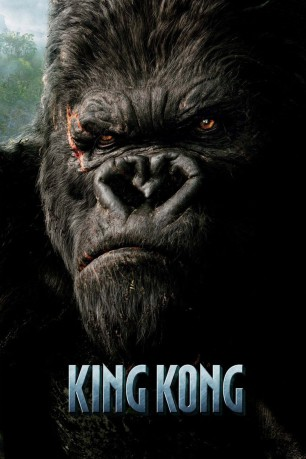
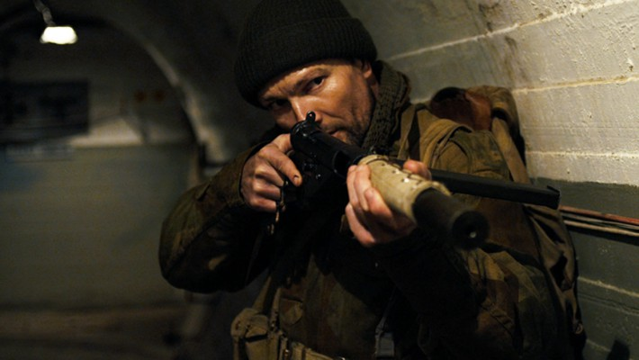
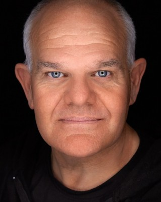
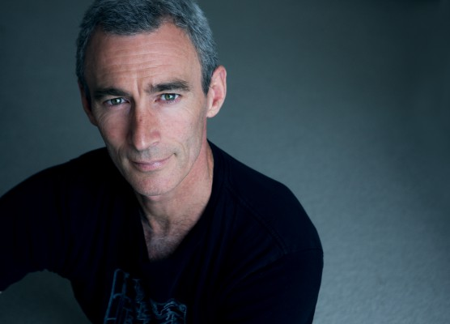

#151 King Kong
Auszeichnungen: 3 Oscars gewonnen für 1 Oscars nominiert 1 BAFTA-Awards gewonnen
 
 IMDB-Wertung: 7.2 / 10
IMDB-Wertung: 7.2 / 10  Metascore: 81
Metascore: 81 
Amerika in den 30er Jahren: Für seinen neuen Film will der Regisseur Carl Denham eine ganz besondere Kulisse haben. Diese hat er auch schon in einer abgelegenen Insel, "Skull Island", im Gegensatz zu der weiblichen Hauptrolle gefunden. Erst kurz vor der Abreise findet sie sich in der schönen Ann Darrow, die sofort auf das Angebot einsteigt und mitreist. Keiner des Filmteams, nicht mal Denham, war bisher auf der Insel und schnell müssen sie dort feststellen, dass es ein Fehler war, sie dafür auszuwählen. Denn auf ihr lebt ein Eingeborenenstamm, der einen riesigen Gorilla, "King Kong", anbetet und ihm von Zeit zu Zeit Menschen opfert. Die Eingeborenen sind so von Ann beeindruckt, dass sie das nächste Opfer sein soll...
Jahr: 2005
Dauer: 187 Minuten
FSK: 12
Land: Neuseeland Studio: UIPTonspuren:
Untertitel:
Auflösung: 1080p (1920×816) Größe: 15462 MB
Genre: Action, Abenteuer, Drama, Liebe
Regisseur:  Peter Jackson
Peter Jackson
Drehbuch: Fran Walsh, Philippa Boyens, Peter Jackson, Merian C. Cooper, Edgar Wallace
Soundtrack: James Newton Howard
Darsteller:
 Naomi Watts als Ann Darrow
Naomi Watts als Ann Darrow Jack Black als Carl Denham
Jack Black als Carl Denham Adrien Brody als Jack Driscoll
Adrien Brody als Jack Driscoll Thomas Kretschmann als Captain Englehorn
Thomas Kretschmann als Captain Englehorn Colin Hanks als Preston
Colin Hanks als Preston Andy Serkis als Kong / Lumpy
Andy Serkis als Kong / Lumpy Evan Parke als Hayes
Evan Parke als Hayes Jamie Bell als Jimmy
Jamie Bell als Jimmy Lobo Chan als Choy
Lobo Chan als Choy- John Sumner als Herb
-  Craig Hall als Mike
 Kyle Chandler als Bruce Baxter
Kyle Chandler als Bruce Baxter-  Mark Hadlow als Harry
- David Dennis als Taps
- David Pittu als Weston
- Tom Hobbs als Young Assistant
-  Jed Brophy als Venture Crew
- Richard Kavanagh als Venture Crew
 Will Wallace als Venture Crew
Will Wallace als Venture Crew- Joe Folau als Venture Crew
- Tim Wong als Venture Crew
- Greg Smith als Venture Crew
- Peter McKenzie als Venture Crew
- Todd Rippon als Venture Crew
- Phil Grieve als Laughing Man
- Stephen A. Buckley als Cab Driver
 Rick Baker als Pilot
Rick Baker als Pilot- Stig Eldred als Army Commander
- Belindalee Hope als Burlesque Dancer
 Peter Jackson als Gunner
Peter Jackson als Gunner- Frank Darabont als Gunner
- Latham Gaines als Photographer
- Luanne Gordon als Theatre Actor
 Lorraine Ashbourne als Theatre Actor
Lorraine Ashbourne als Theatre Actor Edwin Wright als Theatre Actor
Edwin Wright als Theatre Actor Jim McLarty als Photographer
Jim McLarty als Photographer- Steve Cooke als Theater Escort , uncredited
- James Crompton als Alhambra Theatre Patron , uncredited
- Lee Donoghue als Investment Assistant , uncredited
- Jan Gopperth als New York Theatre Goer , uncredited
- Tim Kano als New Yorker , uncredited
- Howard Shore als Orchestra Pit Conductor , uncredited
- Eric Vespe als Passenger in Rail Car , uncredited
- William Johnson als Manny
- Geraldine Brophy als Maude
- Pip Mushin als Zelman
- Jim Knobeloch als Thuggish Executive
- Ric Herbert als Sleazy Executive
- Lee Donahue als Studio Guy's Assistant
- Tiriel Mora als Fruit Vendor
Datei: X:\2005(G-M)\King Kong (2005, FSK12, 1920x816).mkv seit 13.02.2015
Festplatte: HD 2005(G-Z)-2006(A-Z)
 Es gibt insgesamt 46 Filme in der Gruppe '2005(G-M)'
Es gibt insgesamt 46 Filme in der Gruppe '2005(G-M)'